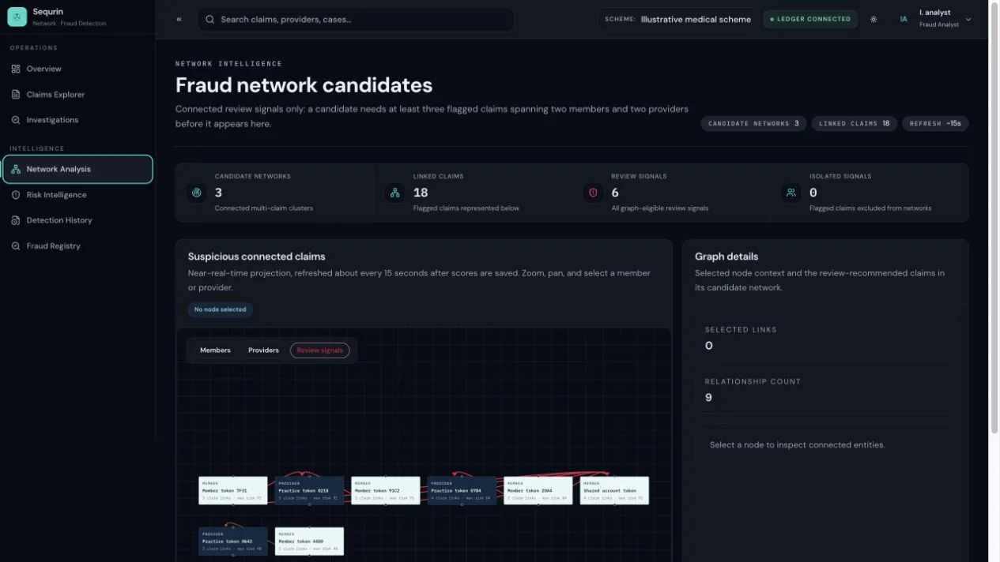

Network intelligence
See what a single record leaves out.
Claims rarely exist in isolation. Connected views bring providers, members, facilities, timing and related claims into the same picture so investigators can see the relationships around an unusual record, not just the record itself.
